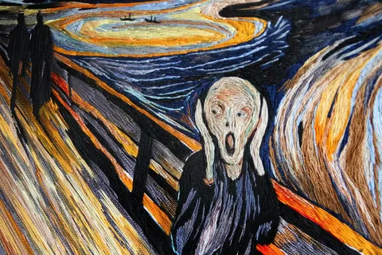

Людям нашей профессии свойственен хронический стресс. Но каждый из них его переносит по-своему. На ком-то триггеры стресса сказываются сильнее, стресс нарастает, копится, не проходит, приводит к истощению. Стресс - это не что-то эфемерное, это вполне себе медицинское состояние. А кто-то (например, я) достаточно толстокожий и пофигистичный, чтобы от стресса не страдать.
А говорят, что есть еще выгорание. Мне о нем в молодости как-то не рассказали, поэтому я не знал, что так бывает, и потому не выгораю. Я не отрицаю его существование, но что это - толком не понимаю. Я могу устать. Я могу задолбаться. Я могу нервничать. Я могу сорваться. Но выгореть - а как это?
В то же время у меня есть некоторое ощущение, что в доле случаев выгорание - это надуманная проблема. Выгорать нынче модно. Это как бы демонстрирует твою самоотдачу - мол так сильно работал, что аж выгорел. Или как способ привлечь внимание или нарваться на жалость. Повторюсь, я не отрицаю существование выгорания, я лишь не уверен, что прям _все_, кто твердит о выгорании, его себе не надумали.
(не является медицинской рекомендацией, при необходимости проконсультируйтесь с врачом)
Это как с депрессией. В моей юности, в нулевых, у молодежи было модно всем говорить, что ты в депрессии. Типа ой, меня бросил парень, я в депре, видите какие глаза заплаканные? Нет, это не депра, это грустненько. А депрессия - это настоящая болезнь, только выглядит она совсем иначе. Это когда ты, может быть, даже выглядишь весельчаком, в завтра хлоп - и пулю в висок.
(автор никого не склоняет к суициду, даже не думайте в эту сторону, и R.I.P. Chester)
А вот стресс вполне реален, измерим, ощутим и влияет на многие системы организма. Это нормальная система, и ее нужно контролировать. Недавно у меня жена решила уходить с работы, потому что атмосфера и формат тяготили. Я в один из ее последних рабочих дней упомянул выгорание и стресс, на что супруга ответила, что никакого выгорания и стресса у нее нет, просто все задолбало. Про выгорание я согласился (ей тоже в свое время никто не рассказал, что так можно), а вот про стресс поспорил, и предложил пройти опросник по шкале Кристиансона, который по большому количеству симптомов измеряет уровень стресса. Получилось 56 быллов, что соответствуем максимальному уровню стресса - истощению. Хотя не то, чтобы она сильно жаловалась. У меня, например, 21 балл (нормальный уровень). Что ж, понятненько, повторим через пару месяцев.
В общем, берегите здоровье, следите за собой (я вот записался на чекап, у нас в ДМС такое есть), а то в нашем то возрасте...
